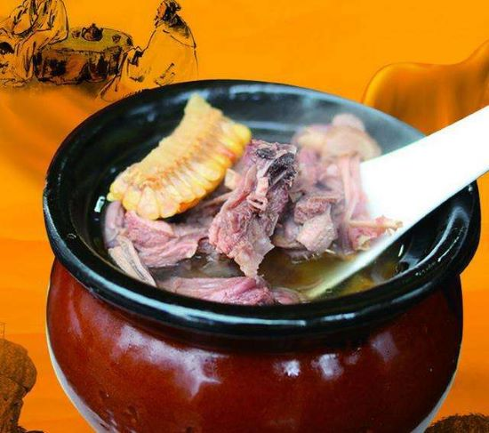
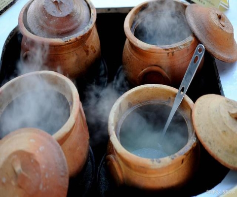

|
瓦 罐 汤 |
瓦罐煨汤，又名民间瓦罐煨汤，1994年名称由民间饭庄所取，江西省民间传统煨汤方法，以瓦罐为器，精配食物加以天然矿泉水为原料，以硬质木炭火恒温传统六面受热，煨制达七小时以上。 |
 |
|---|---|---|
|  | 瓦罐煨汤采用多种名贵药材，科学配方，精配食物，加以天然矿泉水为原料，置于一米方圆的巨型大瓦罐内，再以优质木炭恒温制达六小时以上。瓦罐之妙，在于土质陶器秉阴阳之性，久煨之下原料鲜味及营养成分充分融解于汤中，汤汁稠浓，醇香诱人，风味独特，食补性强。该汤充分吸收中药材的药理成份，更有消除疲劳、补肾强身、益智健体、延年益寿的作用，达到了食补的最高境界。瓦罐汤食材种类丰富，很多食物甚至药材都可以用来煨制。如煨制冬瓜排骨汤时，可以加入海带，墨鱼等配料。煨制鸡汤时，可加入红枣，花生，莲子，天麻，人参等。 |
|---|